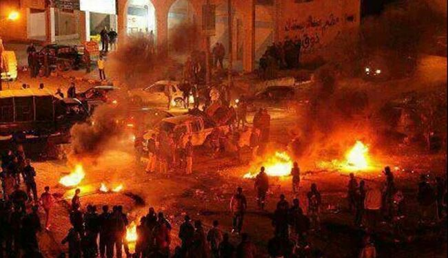
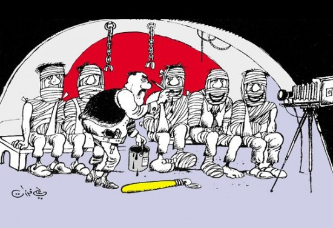
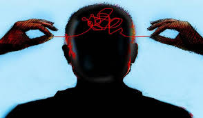
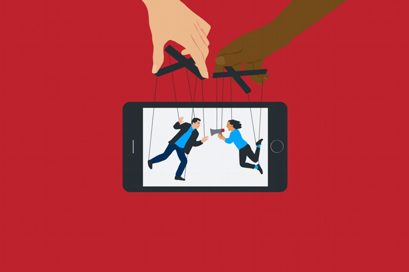

استخدام الصور في الحروب النفسية يعتبر استراتيجية فعالة لنشر الرعب والهلع بين السكان المدنيين بهدف زيادة التوتر والعنف وتدهور الوضع الإنساني في المناطق المتضررة. يمكن استخدام الصور بشكل مباشر أو تعديلها بطرق مختلفة لخلق تأثير نفسي على الأفراد وزعزعة استقرارهم.
تتمثل أهداف استخدام الصور في الحروب النفسية في نشر الرعب والهلع بين السكان المدنيين، وإثارة الفزع والتخوف لتشتيت الانتباه وتقليل الدعم للخصم، وبث الإحباط واليأس بين الشعوب المستهدفة.
تتمثل أهداف استخدام الصور في الحروب النفسية في نشر الرعب والهلع بين السكان المدنيين، وإثارة الفزع والتخوف لتشتيت الانتباه وتقليل الدعم للخصم، وبث الإحباط واليأس بين الشعوب المستهدفة.
تعتبر الصور وسيلة فعّالة لنقل الرسائل النفسية والإيصال إلى عقول الأفراد بشكل سريع ومباشر، مما يجعلها أداة مثالية للاستخدام في الحروب النفسية.
من الجدير بالذكر أن استخدام الصور في الحروب النفسية يثير قضايا أخلاقية وإنسانية، حيث يتم استغلال الألم والمعاناة البشرية لأغراض سياسية وعسكرية، مما يسبب آثار نفسية وعاطفية خطيرة على الضحايا.
تصاحب استخدام الصور في الحروب النفسية تحذيرات من المنظمات الدولية وحقوق الإنسان بشأن ضرورة احترام القوانين الدولية والإنسانية وعدم استخدام الصور بشكل مسيء لتحقيق أهداف عسكرية أو سياسية.
في الختام، يجب على المجتمع الدولي أن يتخذ إجراءات لمكافحة استخدام الصور في الحروب النفسية وحماية السكان المدنيين من الآثار السلبية لهذه الاستراتيجية، وضمان احترام حقوق الإنسان والكرامة الإنسانية في جميع الأوقات.
   